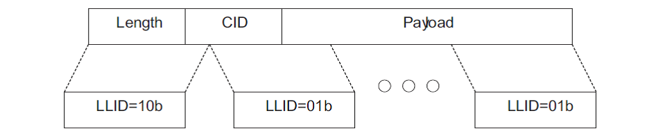

The present document guidelines are intended to help users of the Bluetooth Low Energy (LE) Stack Library to properly set the Packets Memory Management parameters according to the specific application profiles that the target application is going to implement.
This document is valid for BlueNRG-LP/BlueNRG-LPS Bluetooth LE stack v3.x.
Packet Manager
- Bluetooth Low Energy stack library v3.x supports the Fragmentation and Recombination of L2CAP PDUs.
- Fragmentation consists in splitting large PDUs into multiple small fragments, so that each one can be sent in a single link layer packet. Recombination is reassembling these fragments in a single L2CAP PDU.
|

|
| Figure 1: Host Packets plitting |
- This feature allows to exchange larger ATT packets among Bluetooth LE nodes for addressing the needs to carry out more data, for instance to write more data with a single write request. While a connected peer device can handle larger ATT MTU, another one could not. To support Fragmentation and Recombination in this heterogeneous scenario with different peer's characteristics, a new module has been added for handling the memory resources. This module, namely Packet Manager (PM), handles the memory allocated for packets in order to control system performance and reducing memory footprint: the user application can control the allocated resources based on its application scenario.
- The scope of this document is to underline the key features of Packet Manager module allowing to get the requested performances
Memory buffer allocation size
- The BLE_STACK_TOTAL_BUFFER_SIZE macro is used to compute the amount of heap memory to be allocated for the stack library.
- The MBLOCKS_COUNT parameter is used to tune the allocated memory for the Packet Manager. This value has to be computed taking into account different key points:
-
Mandatory:
-
Maximum supported ATT_MTU.
-
Maximum number of simultaneous connections that the device will support.
-
Optional:
-
Speed-up Throughput (OPT_MBLOCKS_CONF parameter);
-
OPT_MBLOCKS_CONF is an optional number of blocks that should be given to the stack to increase the number of buffers. In some cases, increasing the number of buffers can help the application increase the throughput.
- The BLE_STACK_MBLOCKS_CALC macro is provided to compute the mandatory memory size required for the basic stack functionality, while the optional packets can be freely set on the basis of application profile requirement.
ATT MTU
- ATT Maximum Transmission Unit (MTU) is the maximum length of an ATT packet. The ATT MTU is defined by the L2CAP and it can be between 23 (default) and 65535 bytes (ST Bluetooth LE stack 3.x supports an ATT MTU up to 1020 bytes).
- When using larger ATT MTU, the application packets are fragmented into 27-byte Link Layer packets and then the throughput can increase as we eliminate transferring ATT and L2CAP layers overhead bytes and replacing them with ATT data.
Optional resources
- The packet resources can be requested to satisfy user application and remote requests:
-
If the user application wants to execute an operation that requires to send a packet, the PM tries to allocate the requested fragments. If the resources are not available it fails and an "insufficient resources" error is returned. The user application can retry when the resources become available.
-
If the stack has to elaborate a request from a remote peer, it checks if there are the needed resources to elaborate it and to compose the response packet. If the resources are not available, the requested elaboration is postponed when the resource becomes available.
- For such reason, optional memory blocks can be allocated (using the OPT_MBLOCKS_CONF macro) to reduce the probability to get missing resources and then to speed-up the application throughput.
 1.8.10
1.8.10